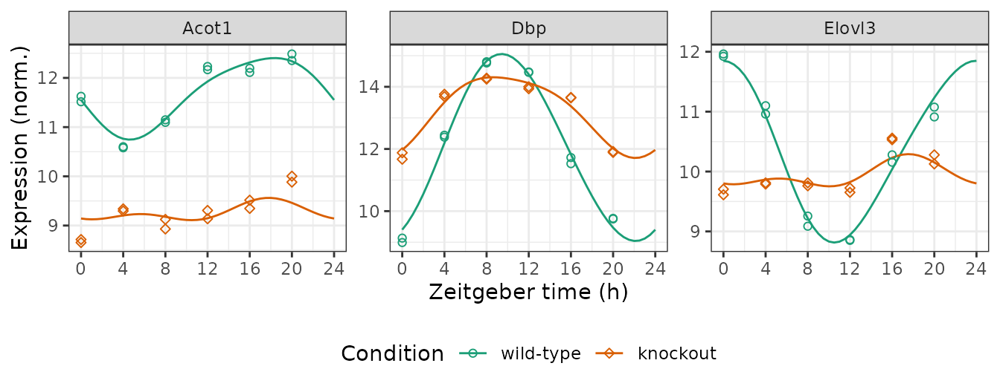

Quantifying differential rhythmicity between conditions
Source:vignettes/differential-rhythmicity.Rmd
differential-rhythmicity.RmdIntroduction
Here we show how to use limorhyde2 to quantify
rhythmicity and differential rhythmicity in data from multiple
conditions. The data are based on liver samples from wild-type and
Rev-erb\(\alpha/\beta\) double-knockout
mice (Cho et al. 2012
and GSE34018).
Load packages
library('data.table')
library('ggplot2')
library('limorhyde2')
library('qs')
# doParallel::registerDoParallel() # register a parallel backend to minimize runtime
theme_set(theme_bw())Load the data
The expression data are in a matrix with one row per gene and one column per sample. The metadata are in a table with one row per sample. To save time and space, the expression data include only a subset of genes.
y = GSE34018$y
y[1:5, 1:5]
#> GSM840516 GSM840517 GSM840518 GSM840519 GSM840520
#> 12686 11.962830 11.923338 11.098814 10.958933 9.256413
#> 13170 8.989743 9.132606 12.381036 12.441759 14.766070
#> 26897 11.515292 11.625519 10.579969 10.601969 11.096489
#> 11287 7.985859 7.930935 7.674688 7.899531 7.768563
#> 12046 8.024084 7.856703 7.942198 8.172695 7.981340
metadata = GSE34018$metadata
metadata
#> sample cond time
#> 1: GSM840516 wild-type 0
#> 2: GSM840517 wild-type 0
#> 3: GSM840518 wild-type 4
#> 4: GSM840519 wild-type 4
#> 5: GSM840520 wild-type 8
#> 6: GSM840521 wild-type 8
#> 7: GSM840522 wild-type 12
#> 8: GSM840523 wild-type 12
#> 9: GSM840524 wild-type 16
#> 10: GSM840525 wild-type 16
#> 11: GSM840526 wild-type 20
#> 12: GSM840527 wild-type 20
#> 13: GSM840504 knockout 0
#> 14: GSM840505 knockout 0
#> 15: GSM840506 knockout 4
#> 16: GSM840507 knockout 4
#> 17: GSM840508 knockout 8
#> 18: GSM840509 knockout 8
#> 19: GSM840510 knockout 12
#> 20: GSM840511 knockout 12
#> 21: GSM840512 knockout 16
#> 22: GSM840513 knockout 16
#> 23: GSM840514 knockout 20
#> 24: GSM840515 knockout 20
#> sample cond timeFit linear models and compute posterior fits
Because the samples were acquired at relatively low temporal
resolution (every 4 h), we use three knots instead of the default four,
which reduces the flexibility of the spline curves. We specify
condColname so getModelFit() knows to fit a
differential rhythmicity model.
fit = getModelFit(y, metadata, nKnots = 3L, condColname = 'cond')
fit = getPosteriorFit(fit)Get rhythm statistics
Next, we use the posterior fits to compute rhythm statistics for each gene in each condition.
rhyStats = getRhythmStats(fit)
print(rhyStats, nrows = 10L)
#> cond feature peak_phase peak_value trough_phase trough_value
#> 1: wild-type 12686 0.000000 11.848689 10.510719 8.814508
#> 2: wild-type 13170 9.431107 15.056098 22.129887 9.039250
#> 3: wild-type 26897 18.371177 12.403175 4.623781 10.745386
#> 4: wild-type 11287 22.517494 7.903967 7.586936 7.794846
#> 5: wild-type 12046 5.694928 7.984916 20.181606 7.971871
#> ---
#> 96: knockout 317750 22.569400 8.197825 7.890174 8.050101
#> 97: knockout 329015 18.277878 9.367790 10.330503 9.236423
#> 98: knockout 381760 19.734165 9.456695 9.938374 9.257839
#> 99: knockout 434864 21.966042 7.912880 8.649651 7.761379
#> 100: knockout 110599566 6.508437 8.959367 22.779614 8.945090
#> peak_trough_amp mesor
#> 1: 3.03418170 10.368427
#> 2: 6.01684814 12.018767
#> 3: 1.65778881 11.675870
#> 4: 0.10912046 7.854743
#> 5: 0.01304465 7.979693
#> ---
#> 96: 0.14772364 8.104574
#> 97: 0.13136624 9.296439
#> 98: 0.19885626 9.353978
#> 99: 0.15150048 7.829699
#> 100: 0.01427692 8.953484Get differential rhythm statistics
We can now calculate the rhythmic differences for each gene between any two conditions, here between wild-type and knockout.
diffRhyStats = getDiffRhythmStats(fit, rhyStats)
print(diffRhyStats, nrows = 10L)
#> feature cond1 cond2 mean_mesor mean_peak_trough_amp diff_mesor
#> 1: 103266 wild-type knockout 9.094249 0.184903036 0.051687912
#> 2: 108897 wild-type knockout 7.958910 0.006831757 -0.005168699
#> 3: 110599566 wild-type knockout 8.938463 0.069308476 0.030043525
#> 4: 11287 wild-type knockout 7.867503 0.116526530 0.025519670
#> 5: 12046 wild-type knockout 8.038329 0.170680319 0.117271901
#> ---
#> 46: 72114 wild-type knockout 7.815911 0.102562698 -0.031350508
#> 47: 74087 wild-type knockout 7.876956 0.120937382 0.031165093
#> 48: 75801 wild-type knockout 7.885490 0.009974481 0.021612144
#> 49: 78697 wild-type knockout 8.435127 0.016110453 0.030223706
#> 50: 93877 wild-type knockout 8.060970 0.134552916 0.103128679
#> diff_peak_trough_amp diff_peak_phase diff_trough_phase diff_rhy_dist
#> 1: -0.214572098 -4.188981 0.4565494 0.26587667
#> 2: -0.006489454 10.576316 9.3558268 0.01348066
#> 3: -0.110063106 -6.830498 -6.7648712 0.12818012
#> 4: 0.014812131 -6.040059 -7.8807586 0.16598258
#> 5: 0.315271340 -6.811385 11.1769819 0.33131162
#> ---
#> 46: 0.037126061 -9.577629 6.1331939 0.19524286
#> 47: -0.025998153 -2.082278 -2.0154710 0.06976247
#> 48: -0.012272708 5.695024 -8.5424574 0.01626120
#> 49: -0.001703226 8.330807 9.3559106 0.02858621
#> 50: -0.086004439 10.791143 8.1130055 0.26608906We can examine the distributions of the statistics in various ways, such as ranking genes by difference in peak-to-trough amplitude (no p-values necessary) or plotting difference in peak-to-trough amplitude vs. difference in mean expression.
print(diffRhyStats[order(diff_peak_trough_amp)], nrows = 10L)
#> feature cond1 cond2 mean_mesor mean_peak_trough_amp diff_mesor
#> 1: 13170 wild-type knockout 12.616280 4.3073908 1.19502624
#> 2: 12686 wild-type knockout 10.157657 1.7859377 -0.42154165
#> 3: 26897 wild-type knockout 10.473462 1.0551507 -2.40481581
#> 4: 14385 wild-type knockout 10.335544 0.6410604 -0.23091881
#> 5: 56209 wild-type knockout 11.382764 0.5173328 -0.29032848
#> ---
#> 46: 13507 wild-type knockout 7.983178 0.1552713 0.15367719
#> 47: 17252 wild-type knockout 9.983190 0.2583523 -0.08320065
#> 48: 12046 wild-type knockout 8.038329 0.1706803 0.11727190
#> 49: 20775 wild-type knockout 11.830131 1.3835675 0.24859164
#> 50: 22113 wild-type knockout 8.395714 0.6561732 0.26000350
#> diff_peak_trough_amp diff_peak_phase diff_trough_phase diff_rhy_dist
#> 1: -3.4189147 -0.8277360 -0.01805794 3.5242228
#> 2: -2.4964879 -6.4332587 -0.45100842 3.1408093
#> 3: -1.2052763 -0.5625297 5.85548916 1.2119948
#> 4: -0.9487905 5.2747430 -1.96740822 1.0962868
#> 5: -0.5254610 -0.9897313 0.16651740 0.5379302
#> ---
#> 46: 0.2214059 4.7481008 -0.10424266 0.2551407
#> 47: 0.2605478 -5.3279342 2.99082880 0.3873103
#> 48: 0.3152713 -6.8113848 11.17698193 0.3313116
#> 49: 0.4137977 3.5329385 -1.78226089 1.2889095
#> 50: 0.5568909 -0.2510863 -2.68931784 0.5582583
ggplot(diffRhyStats) +
geom_point(aes(x = diff_mesor, y = diff_peak_trough_amp), alpha = 0.2) +
labs(x = bquote(Delta * 'mesor (norm.)'), y = bquote(Delta * 'amplitude (norm.)'))
Get observed and fitted time-courses
We can compute the expected measurements for one or more genes at one or more time-points in each condition, which correspond to the fitted curves. Here we plot the posterior fits and observed expression for three genes (converting from gene id to gene symbol).
genes = data.table(
id = c('13170', '12686', '26897'),
symbol = c('Dbp', 'Elovl3', 'Acot1'))
measFit = getExpectedMeas(fit, times = seq(0, 24, 0.5), features = genes$id)
measFit[genes, symbol := i.symbol, on = .(feature = id)]
print(measFit, nrows = 10L)
#> time cond feature value symbol
#> 1: 0 wild-type 13170 9.402594 Dbp
#> 2: 0 wild-type 12686 11.848689 Elovl3
#> 3: 0 wild-type 26897 11.551600 Acot1
#> 4: 0 knockout 13170 11.969182 Dbp
#> 5: 0 knockout 12686 9.801527 Elovl3
#> ---
#> 290: 24 wild-type 12686 11.848689 Elovl3
#> 291: 24 wild-type 26897 11.551600 Acot1
#> 292: 24 knockout 13170 11.969182 Dbp
#> 293: 24 knockout 12686 9.801527 Elovl3
#> 294: 24 knockout 26897 9.142774 Acot1Next we combine the observed expression data and metadata. The curves
show how limorhyde2 is able to fit non-sinusoidal
rhythms.
measObs = mergeMeasMeta(y, metadata, features = genes$id)
measObs[genes, symbol := i.symbol, on = .(feature = id)]
print(measObs, nrows = 10L)
#> sample cond time feature meas symbol
#> 1: GSM840504 knockout 0 13170 11.669138 Dbp
#> 2: GSM840504 knockout 0 12686 9.705361 Elovl3
#> 3: GSM840504 knockout 0 26897 8.654624 Acot1
#> 4: GSM840505 knockout 0 13170 11.877697 Dbp
#> 5: GSM840505 knockout 0 12686 9.611530 Elovl3
#> ---
#> 68: GSM840526 wild-type 20 12686 10.911935 Elovl3
#> 69: GSM840526 wild-type 20 26897 12.486105 Acot1
#> 70: GSM840527 wild-type 20 13170 9.749365 Dbp
#> 71: GSM840527 wild-type 20 12686 11.075636 Elovl3
#> 72: GSM840527 wild-type 20 26897 12.352601 Acot1
ggplot() +
facet_wrap(vars(symbol), scales = 'free_y', nrow = 1) +
geom_line(aes(x = time, y = value, color = cond), data = measFit) +
geom_point(aes(x = time %% 24, y = meas, color = cond, shape = cond),
size = 1.5, data = measObs) +
labs(x = 'Zeitgeber time (h)', y = 'Expression (norm.)',
color = 'Condition', shape = 'Condition') +
scale_x_continuous(breaks = seq(0, 24, 4)) +
scale_color_brewer(palette = 'Dark2') +
scale_shape_manual(values = c(21, 23)) +
theme(legend.position = 'bottom')